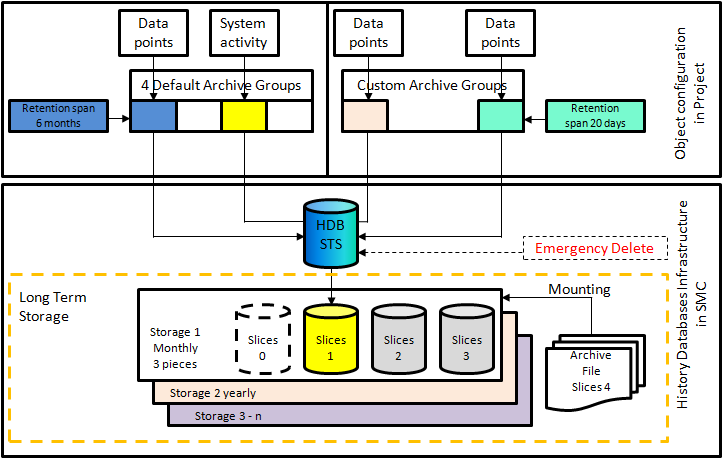

History Infrastructure
The History Infrastructure allows you to create a Historic Database (HDB) and a Notification Database (NDB). For information on the terminologies and concepts applicable to either HDB, NDB, or both, see Terminologies applicable to Historic Database (HDB) and Notification Database (NDB).
The History Database is used to log a wide range of user and system activities as well as online and offline trend data. The history database stores the following data:
- User activities in the system
- Alarms and their treatment
- Faults that occurred and were handled using batch messaging
- Type of values logged in trend

Desigo CC provides an extensive infrastructure for data storage.
Depending on the intended use, data is stored in the History Database (Short Term Storage, STS) or in the Long Term Storage (LTS) and subsequently archived in archive files. The Archive Groups (Default Archive Groups and Custom Archive Groups) allow for customizing storage according to specific customer requirements.
Data that does not need to be stored in the Long Term Storage is deleted automatically after a retention span. This prevents an overcrowding of the Short Term Storage’s capacities which, in turn, would trigger an automatic Emergency Delete. The retention span also ensures that legal requirements about data retention (for example, a mandatory maximum storage period of 20 days) are met.
The Filter Group allow the filtering of system and project data based on value.
To prevent data loss, a manual data backup or an automatic data backup can be executed. In case of server failures or exchanges, you can restore the last backup to the project. All data (Short-Term and Long-Term Storage) that has not been moved to an archive yet is backed up.
To prevent history database overflow, the oldest data must be deleted periodically. This can be done either automatically in Desigo CC or manually using the SMC.

NOTE:
Backup the data prior to manually or automatically deleting the history data.
For more information on how to backup history data, see Project and HDB Backup.
This section provides reference and background information for configuring of Desigo CC with history infrastructure.
For creating and configuring a new History Database, see the step-by-step section.
For restoring and upgrading the History Database, see the step-by-step section.